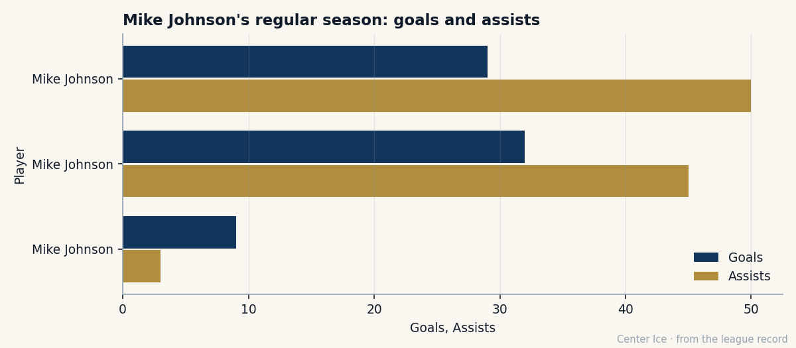

All-Rookie at 23, Leading Playoff Scorer at 30: Mike Johnson and the Nine Years in Between
Nine goals in 10 playoff games. Third-best scorer on the Coyotes all season. No contract for next year.
 Carol BinghamFeatures writer · Rinkside
Carol BinghamFeatures writer · Rinkside Mike Johnson87 has 9 goals in 10 playoff games. That leads every player left in these Stanley Cup playoffs by three. He has 12 points, which ties
Mike Johnson87 has 9 goals in 10 playoff games. That leads every player left in these Stanley Cup playoffs by three. He has 12 points, which ties  Mike York79 of
Mike York79 of  Edmonton Oilers for the postseason lead among surviving clubs. Nobody in the regular-season top 30 scored 103 points or fewer, and Johnson finished with 77. He was invisible in every national ranking all spring.
Edmonton Oilers for the postseason lead among surviving clubs. Nobody in the regular-season top 30 scored 103 points or fewer, and Johnson finished with 77. He was invisible in every national ranking all spring.
Thirty years old, from Scarborough, Ontario, undrafted, Johnson plays right wing for the  Phoenix Coyotes Coyotes, who entered the postseason as the 8th seed in the West on a $47.81M payroll and beat the 1 seed
Phoenix Coyotes Coyotes, who entered the postseason as the 8th seed in the West on a $47.81M payroll and beat the 1 seed  Colorado Avalanche, who spent $71.56M, in seven games. They are now down 2-1 to
Colorado Avalanche, who spent $71.56M, in seven games. They are now down 2-1 to  Dallas Stars in the second round, with Game 4 on 2005-04-28 at home.
Dallas Stars in the second round, with Game 4 on 2005-04-28 at home.
Johnson has $1.40M left on his contract. That's 2.9% of his club's payroll. He has zero years left, which means he will be on the open market when free agency closes on 2005-07-28, 93 days from now.
The Pee-Wee kid who went to the wrong arena
In 1988, Johnson played the Quebec International Pee-Wee Hockey Tournament with a team from Wexford, a neighborhood in east Toronto. He was 13. He was not selected in any round of any draft the league has a record for. The Bureau's file lists no draft year, no pick, no round. Undrafted.
The  Toronto Maple Leafs Maple Leafs signed him. He made his professional debut with the Leafs late in the 1996-97 season, within days of the year finishing. Then in 1997-98, his first full year, he scored 47 points. That tied for the rookie lead in the league and earned him a spot on the NHL All-Rookie team. He was 23 years old and was supposed to be a Leaf for a long time.
Toronto Maple Leafs Maple Leafs signed him. He made his professional debut with the Leafs late in the 1996-97 season, within days of the year finishing. Then in 1997-98, his first full year, he scored 47 points. That tied for the rookie lead in the league and earned him a spot on the NHL All-Rookie team. He was 23 years old and was supposed to be a Leaf for a long time.
He wasn't.
The record does not say how he got to Phoenix. He was already there when the data opened on 2004-12-01, and has been ever since. Seven seasons, give or take, of building a body of work on a club that finished last in the Atlantic Division in 2003-04 with 63 points.
The third man on the depth chart
In 2003-04, Johnson played 59 games and scored 79 points. Last season was good. This season was his first full 82-game campaign in years: 32 goals, 45 assists, 77 points, 20.1 minutes a night. Solid. Reliable. The sort of production that means nothing in a league where  Jaromir Jagr84 scored 145 and
Jaromir Jagr84 scored 145 and  Ilya Kovalchuk90 had 138 at 22.
Ilya Kovalchuk90 had 138 at 22.
On the Coyotes, Johnson was third.  Shane Doan86 had 110 points.
Shane Doan86 had 110 points.  Mike Sillinger88 had 101. Johnson's 77 was good for a middle-class season on a middle-class club. He scored 32 goals in 82 games. In these playoffs, he has 9 in 10.
Mike Sillinger88 had 101. Johnson's 77 was good for a middle-class season on a middle-class club. He scored 32 goals in 82 games. In these playoffs, he has 9 in 10.
The Book has him at 87, which is his base grade of 88 minus 1 on the Development Index. His speed is 93 and his shot power is 92. His hero grade, the one that measures whether he shows up when the room is watching, is 89. Morale sits at 97. The Bureau does not think he is going away. His potential, a figure that matters less every year a player ages, is 66.

What the room knows
Phoenix's playoff line reads: Johnson 9+3=12 in 10, Sillinger 3+6=9 in 9,  Steve Konowalchuk85 0+8=8 in 9, Doan 6+1=7 in 9. Four players, every one of them carrying something this spring.
Steve Konowalchuk85 0+8=8 in 9, Doan 6+1=7 in 9. Four players, every one of them carrying something this spring.  Sean Burke88, 38 years old, on a $4.20M salary with one year left, is 5-3 with a 2.21 GAA and a .914 save percentage. He is the oldest reason this series is not over.
Sean Burke88, 38 years old, on a $4.20M salary with one year left, is 5-3 with a 2.21 GAA and a .914 save percentage. He is the oldest reason this series is not over.
The Coyotes' payroll is $47.81M. That is the 15th-highest in this 30-club league. They have 93 points, zero Stanley Cups, and a second-round series they are losing 2-1. If they win on 2005-04-28, Game 5 is back in Dallas. If they lose, they are down 3-1 against a  Marty Turco94 team that has allowed 1.43 goals a night this spring and has 5-1 in the net.
Marty Turco94 team that has allowed 1.43 goals a night this spring and has 5-1 in the net.
The contract he is writing right now
Johnson has no agent quoted in the record, no trade rumor filed, no extension signed. He has 93 days before free agency closes and a season that is either about to end or about to make him a very expensive free agent. Twelve points in 10 games, 9 of them goals, on a $1.40M salary. The market will read his playoff line the same way every club's general manager reads a playoff line: as evidence that the 87 is real.
He played for the Leafs, scored 47 points as a rookie, and was told he was special. Then he spent nine years proving it on a club nobody watched, in a city that does not sell out on a good night (12,112 per game this season, 3rd-lowest in the league), while Doan and Sillinger carried the box scores. He has 97 morale, which means he is not bitter. The room is fine. Tomorrow he will come back and take his shifts on the first line and shoot from the high slot and hope the puck goes in.
Nine goals in 10 games. The hero grade says 89, the speed 93, the age 30. The contract says: figure it out by July 28.